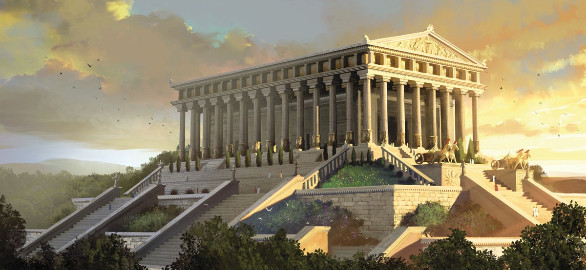

Templul zeiţei Artemis din Efes

Templul zeiţei Artemis din Efes
Templul zeiţei Artemis din Efes (în greacă: Artemision, lat. Artemisium), cunoscut şi ca "Templul Dianei", a fost un edificiu antic grec construit pentru zeiţa Artemis. Templul a fost ridicat în anul 550 î.Hr. în Efes, oraş aflat atunci pe teritoriul imperiului babilonian. Templul zeiţei Artemis din Efes se află la 50 km la sud de oraşul Izmir, Turcia. Din templul original, considerat una din cele şapte minuni ale lumii nu au rămas decât puţine relicve.
Descrierea templului
Templul a fost construit timp de 120 de ani de către împăratul Adrian cel Mare. Clădirea a fost construita de 51m şi de 105 m lungime. 127 de coloane de 18 m înălţime susţineau acoperişul. În interiorul templului se afla statuia de 2 m a zeiţei Artemis, acoperită cu aur şi argint.
Philon a spus despre cladire: "Am văzut zidurile din Babilon, am văzut grădinile din Semiramis, am văzut statuia lui Zeus din Olimp, Colosul din Rodos, piramidele. Dar când am văzut templul din Efes, celelalte minuni au dispărut ca în ceaţă."
La 31 februarie 334 î.Hr., templul a ars într-un incendiu, se spune că un om numit Herostratus a aprins focul, şi că şi el a murit în foc. Istoria acestui om este una din cea mai dramatica şi plina învăţăminte din antichitate. El nu se deosebea prin nimic de semenii săi însă, în dorinţa de a se menţine în conştiinţa oamenilor şi în istorie, comite această crimă. De aici a luat naştere expresia "Slavă lui Herostrate" . Legenda spune că în noaptea în care templul a ars, s-a născut Alexandru cel Mare, iar Artemis a fost prea ocupată cu naşterea lui şi nu a avut grijă de templu.
Alexandru a oferit oamenilor din Efes bani pentru a reconstrui templul, dar aceştia nu au acceptat. Construcţia noului templu a început în anul 323 î.Hr, din banii efesenilor şi a continuat timp de mai mulţi ani. Acest templu era mult mai mare decât precedentul: 69 m lăţime, 137 m lungime, dar numărul de coloane şi înălţimea lor a rămas aceiaşi. Cultul zeiţei Artemis era unul extrem de viu de aceea oraşul a beneficiat de fonduri pentru a construit un mare templu.
În scrierile sale, istoricul Pausanias menţiona faptul că în templul de la Efes exista o mare statuie a zeiţei Artemis, dar existau şi altele precum o veche statuie a zeiţei Nyx realizată de către sculptorul Rhoecus în secolul al VI î.Hr. De asemenea sunt descrise coloanele acoperite cu aur şi argint dar şi picturile ce le reprezentau pe Amazoane, considerate a fii fondatoarele Efesului.
Templul este menţionat şi în scrierile creştinismului timpuriu, inclusiv în Noul Testament. Conform Faptelor Apostolilor, apariţia primilor misionari creştini în Efes a cauzat o mare tulburare şi revoltă în rândul cetăţenilor.
În anul 162 d.Hr, în vremea împăratului roman Marc Aureliu, a fost dat un edict în urma căruia se recunoştea importanţa festivalului religios anual dedicat lui Artemis de la Efes şi se lungea perioada sa de la câteva zile la o lună. Zeiţa Artemis din Efes, în calitate de Mare Zeiţă a fost în cele din urmă identificată cu Cybele. În anul 268, templul a fost avariat în urma raidurilor goţilor când aceştia au atacat Efesul şi au incendiat mare parte din el. Istoria ulterioară a templului este destul de neclară, este posibil să fi fost renovat, dar a intrat în declin după incendiul din 268 care l-a distrus în mare parte şi după indiferenţa împăraţilor şi a cetăţenilor cauzată de declinul cultelor păgâne şi de creştinarea imperiului. Se ştie că multe dintre coloanele vechiului templu au fost transportate la Constantinopol pentru construirea catedralei Sfintei Sofia.
După săpăturile arheologice din secolul al XIX-lea, respectiv secolul XX, multe dintre comorile vechiului templu printre care statui, vase şi basoreliefuri au fost transportate la British Museum din Londra şi la Muzeul de Arheologie din Efes. În prezent vechiul site al templului atrage în continuare mii de vizitatori anual datorită importanţei sale majore.
×

|